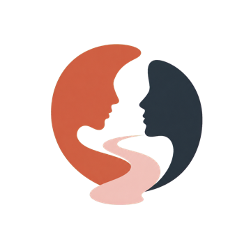
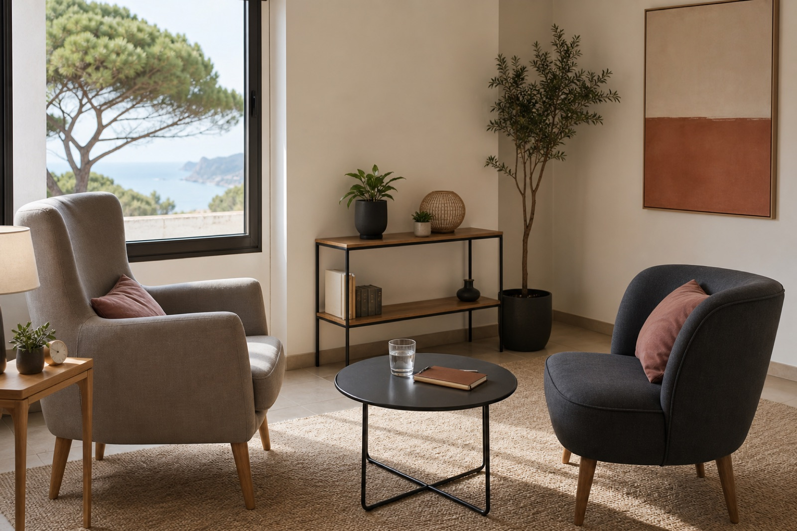

Primera toma de contacto
Un mensaje breve es suficiente; no necesitas explicarlo todo.

Descubriendome
UN ESPACIO PARA EMPEZAR
La primera conversación sirve para poner contexto, resolver dudas y decidir con calma cuál puede ser el siguiente paso.
Un mensaje breve es suficiente; no necesitas explicarlo todo.
Ansiedad, cambios vitales, relaciones, autoestima o momentos de bloqueo.
Un proceso adaptado a lo que necesitas compartir en cada momento.
Se confirma la disponibilidad y se acuerda el formato de la primera conversación.
Solo se piden los datos necesarios.
Un espacio para escuchar y ordenar lo que necesitas.
Carrer Fonoll 3.